Learning Goals
At the end of this Tutorial, you will be able to:
- Understand the concept of flexbox parent-child elements.
- Use the CSS flexbox method to layout the content of web pages in responsive grids of rows and columns.
Below can see the finished version of the sample web page you will create in this Tutorial.

About CSS flexbox
CSS flexbox is one of two layout methods web designers use to arrange web page content into rows and columns. (The other is called CSS grid.)


Flexbox: parent and child elements
The flexbox layout technique is based on the concept of parent and child elements.
- A parent element will typically have a class name of container-flexbox, wrapper-flexbox, flex-wrapper or similar.
- A child element in flexbox layouts is commonly known as an item. For this reason, you will see child elements with class names such as item-top and item-right. When the flexbox method is used to create multi-column layouts, however, you will see child elements with class names such as col-2, col-3 and col-4.
Below is an example from VS Code of the HTML tags for creating a three-column layout with flexbox.

It is the parent element in a flexbox layout that makes it a flexbox layout. In particular, it is one CSS style rule of the parent element. See below.
/* == FLEXBOX PARENT CONTAINER == */ .container-flexbox { display: flex; }
This one style rule of display: flex is enough to make an element a flexbox parent container.
Downloading your sample files
Your first task is to download the three files you need for Tutorial.
- In your web browser, click the following web address: flexbox-sample.html This web page will open in a new tab of your web browser.
- Right-click anywhere on the web page source and choose Save as... (Brave or Chrome) or Save Page As... (Firefox) from the context menu displayed. Save the web page in your 📁 websites/exercises folder with the name flexbox-sample.html 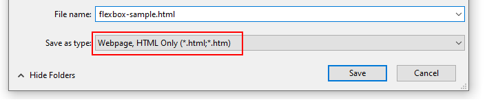 Ensure the Save as type: dropdown list is set to Webpage, HTML only (*.HTML, *.htm).
- Next, click the following web address: flexbox-sample.css This stylesheet file will open in a new tab of your web browser.
- Right-click anywhere in the browser window, and from the context menu, choose Save as... (Brave or Chrome) or Save Page As... (Firefox). 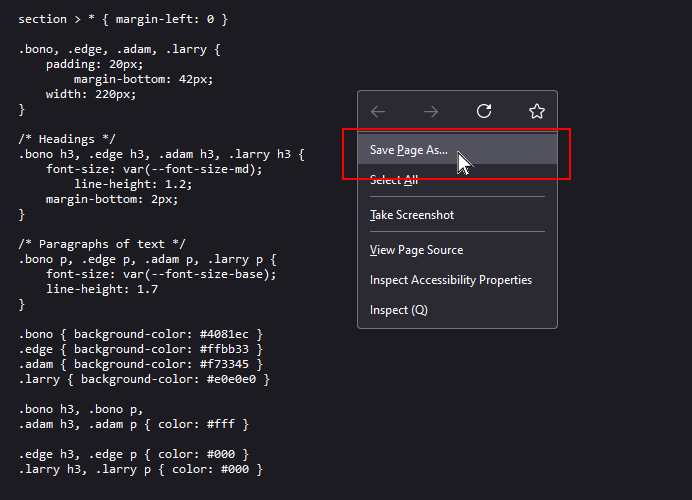
- Save the flexbox-sample.css stylesheet file in your 📁 websites/exercises/assets/css sub-folder.
- Finally, click the following web address: dublin.css This stylesheet file will open in a new tab of your web browser.
- Right-click anywhere in the browser window, and from the context menu, choose Save as... (Brave or Chrome) or Save Page As... (Firefox).
- Save the dublin.css stylesheet file in your 📁 websites/assets/css sub-folder.
Display the flexbox-sample.html web page in your browser. It should look as shown below.
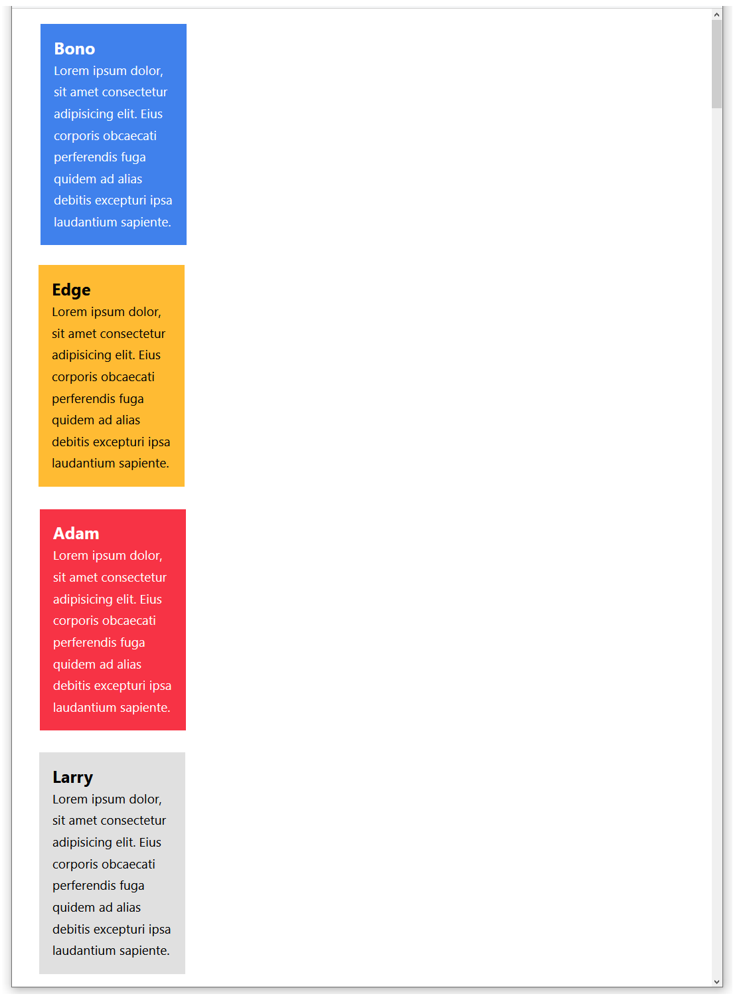Viewing the sample web page and stylesheet
In VS Code, open the following two files on your computer:
📁 websites/exercises/flexbox-sample.html
📁 websites/exercises/assets/css/flexbox-sample.html
In the flexbox-sample.html web page, you can see the <div> tag is used to create four ‘little boxes’.
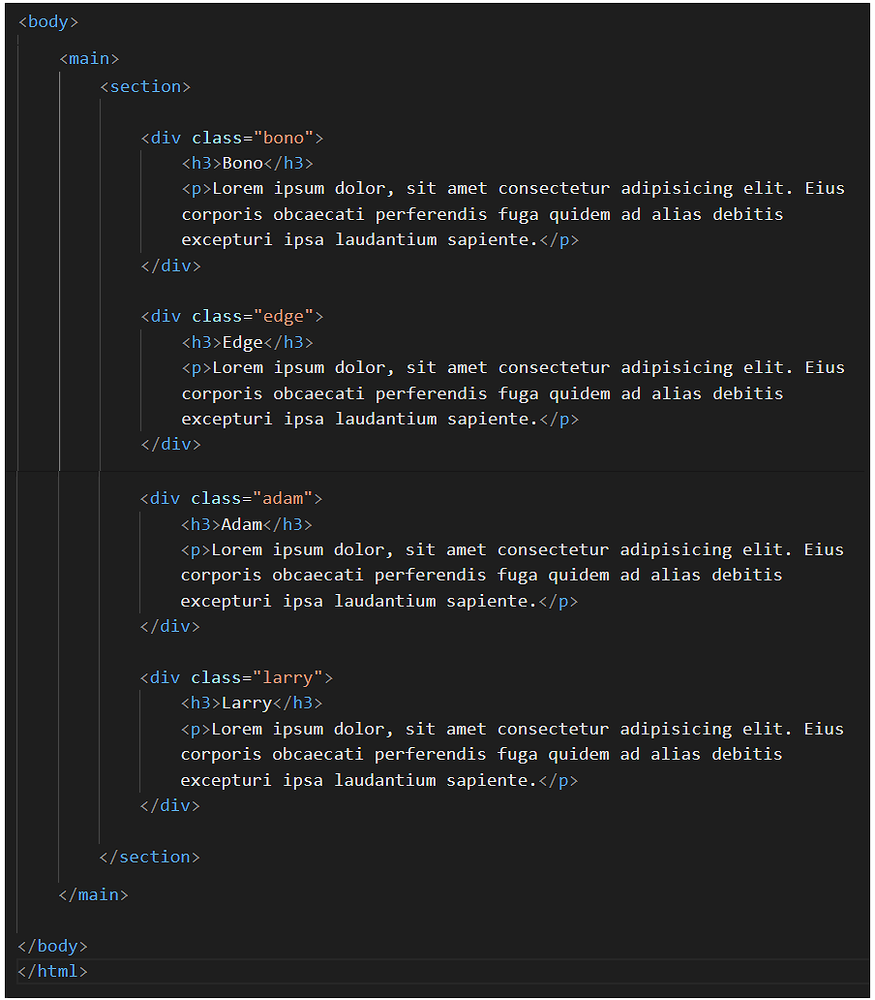In the flexbox-sample.css stylesheet, you can see all four boxes and their <h3> and <p> contents share some properties in common.
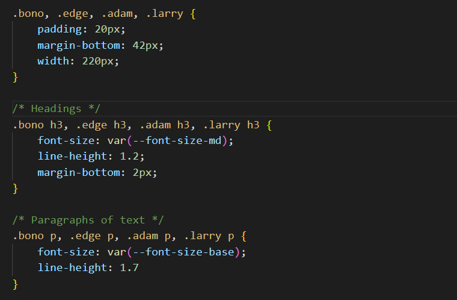However, the four boxes have different background colours, and the text colours are also different.
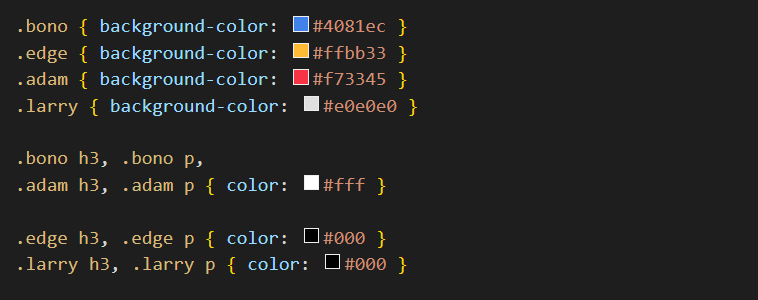You are now ready to update the web page and stylesheet.
Creating a flexbox parent container
Let’s apply the flexbox layout parent-child method to arrange these four HTML elements side-by-side in a single, four-column row.
Your first step is to add a new div element to the web page that will act as a flexbox parent container. Follow the steps below:
- In the flexbox-sample.html web page, wrap the four div elements within a new, outer div that has a class name of container-flexbox.
 Use the Tab key to indent the four ‘little boxes’ from the left margin. This will make your HTML code easier to read.
Use the Tab key to indent the four ‘little boxes’ from the left margin. This will make your HTML code easier to read.
- The container-flexbox element is now a parent element.
- The four little boxes, with the class names of bono, edge, adam and larry are now child elements of this parent element.
- Save your flexbox-sample.html file.
Next, let’s style this new container-flexbox div element so that it acts as a flexbox parent element.
- In VS Code, display the linked flexbox-sample.css stylesheet file.
- Copy-and-paste the .container-flexbox selector with its single – but important – style rule that makes it act as a flexbox parent.
/* == FLEXBOX PARENT CONTAINER == */ .container-flexbox { display: flex; }
You could add this anywhere in the CSS file. But, logically, it makes the most sense to enter it above the styles for its four child elements. 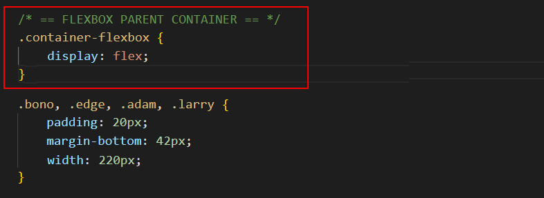 - Finally, update the widths of the four child elements in the CSS file from their current fixed-width value of 220px to a fluid, responsive width of 25%. One example is shown below. 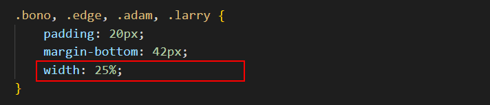
- Save your flexbox-sample.css stylesheet.
View the flexbox-sample.html web page in your browser. It should now look as shown below. 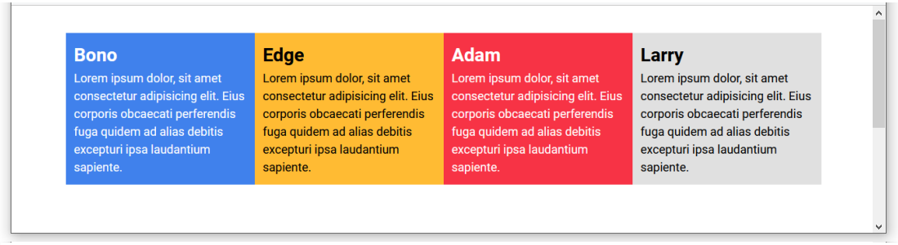
✅ Success. You have now created a multi-column web page layout.
Flexbox columns and gutter spacing
In practice, however, you will want to add two further CSS style rules to your flexbox parent containers, as shown below.
/* == FLEXBOX PARENT CONTAINER == */ .container-flexbox { display: flex; justify-content: space-between; flex-wrap: wrap; }
The justify-content CSS property
Let’s look first at the justify-content property and its typical value of space-between.
When you arrange web page content in two, three of four columns, you will typically want to include some empty spacing between the columns.
This inter-column spacing is known as the gutter, a term inherited from print design.

The total gutter spacing (of one, two or three gutters) is the space remaining or ‘left over’ after the child elements have filled their defined widths.
A flexbox parent container has a CSS property named justify-content that controls how the gutter spacing is displayed, left-to-right, across the screen.
Unfortunately, the CSS justify-content property has a default value of flex-start that will:
- Pack or squeeze the child elements at the left of the parent container, and
- Display the ‘left over’ spacing in a single block at the right of the parent container.


To instead distribute this ‘left over’ space evenly between the columns in gutters, you need to override the default value of the justify-content property by entering the value of space-between in the CSS stylesheet.

This will create the desired result of evenly-spaced columns in your web browser.

Adding gutters between columns
Let’s add some gutter spacing to your sample web page. Here are the steps.
- In VS Code, display the flexbox-sample.css stylesheet.
- Update the .container-flexbox selector by adding a new style rule as follows:
/* == FLEXBOX PARENT CONTAINER == */ .container-flexbox { display: flex; justify-content: space-between }
- For each of the four child elements, reduce their width from 25% to 23%. See one example below.
- Save the flexbox-sample.css stylesheet and then view the flexbox-sample.html page in your web browser. It should now look as shown below. 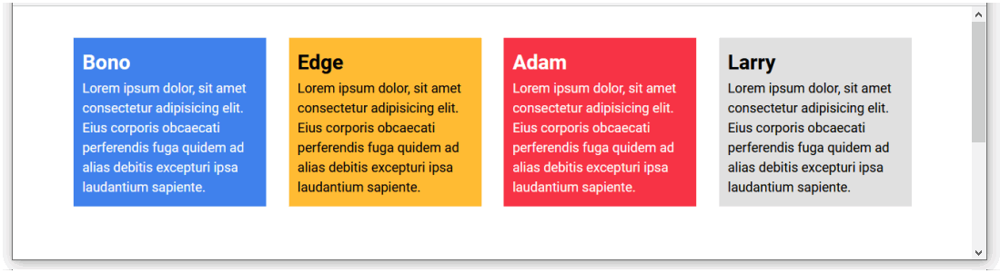
Now, as an experiment, let’s reduce the number of columns of content from four to three.
- In VS Code, display the flexbox-sample.html web page.
- Wrap the first child element inside a comment, so that it will not be displayed by the web browser. See below.

- Save the flexbox-sample.html file and view it in your web browser. It should now look as shown below. 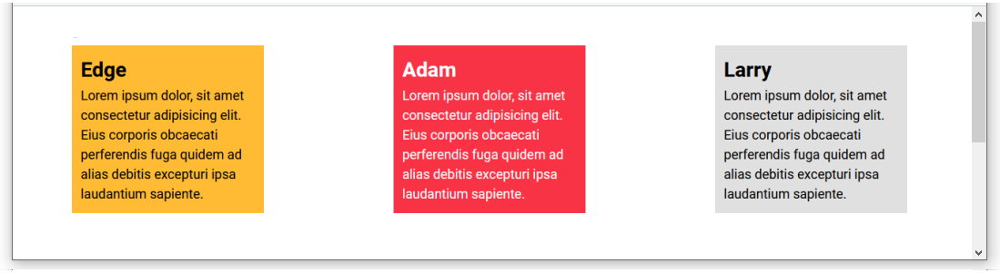
- In the flexbox-sample.css stylesheet, edit the width property of the three, non-commented-out child elements by increasing the value from 23% to 31%. See one example below.

- Save the flexbox-sample.css file and view the page in your web browser. It should now look as shown below.

When finished, edit the web page and stylesheet so that four child elements are again displayed with a width of 23%.
Flexbox and child element wrapping
There is one more CSS property-value pair that you will usually want to apply to your parent flexbox containers.
This property enables child elements to be split or wrapped across multiple rows within a parent element.
Consider the following three-column layout, displayed under a section-wide heading that is above and outside the container-flexbox parent element.

What would happen if you added three more child elements to this layout? The result will be as shown below.

As you can see, the parent container-flexbox forces all six child elements to display on a single row, left-to-right, across the screen.
This is because a parent flexbox container has a CSS property named flex-wrap with a default value of nowrap.

How can you retain your three-column layout – now that it contains six child elements? The effect you want to achieve is shown below.

The solution is to override the default nowrap value of the flex-wrap property by entering a value of wrap for the flexbox parent container as shown below.

There are many other CSS properties and values you can assign to flexbox parent containers. But for most practical web page layouts, setting values for the display, justify-content and flex-wrap properties is sufficient.
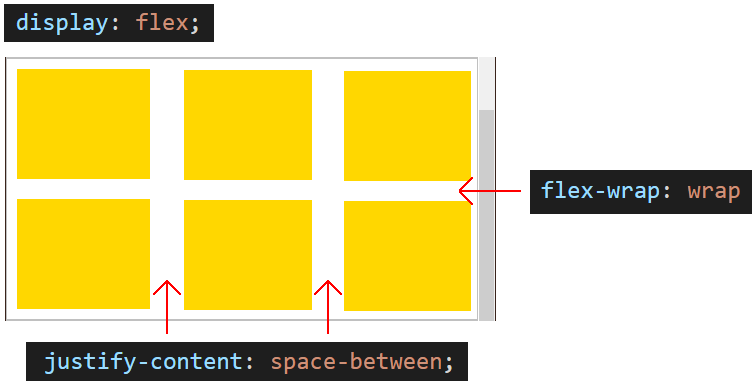Creating a two-row, four-column grid layout
Next, let’s edit the sample web page so that it displays content in a grid of two rows with four columns in each row. Follow these steps.
- In VS Code, in the flexbox-sample.html file, select, copy and paste the four div child elements within the container-flexbox parent element.
- Save the flexbox-sample.html file and view the web page in your browser.
 As you can see, flexbox has squeezed all eight child elements onto a single row.
This is despite each child div element having a set width of 23% in the stylesheet.
As you can see, flexbox has squeezed all eight child elements onto a single row.
This is despite each child div element having a set width of 23% in the stylesheet. - In VS Code, display the flexbox-sample.css file and replace the current .container-flexbox style rules with the following.
/* == FLEXBOX PARENT CONTAINER == */ .container-flexbox { display: flex; justify-content: space-between; flex-wrap: wrap }
- Save the flexbox-sample.css file and view the web page in your browser. It should now look as shown below. 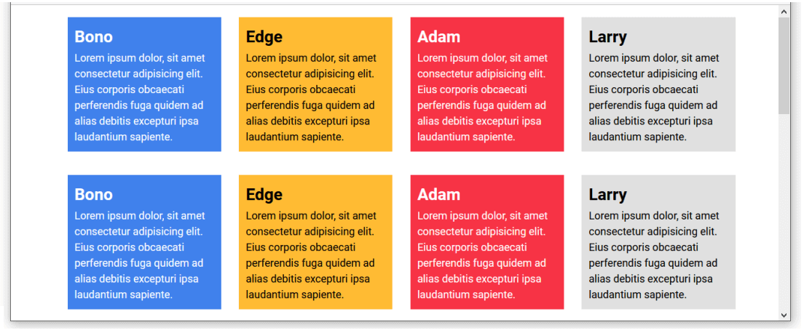
Making your flexbox layout responsive
In this final exercise, let’s ensure your sample web page displays appropriately on devices with smaller viewport widths.
In practice, you will want the content to display in four columns only on non-mobile screens. And as a single, full-width column on mobiles. This requires just one addition to the linked stylesheet.
- In VS Code, in the flexbox-sample.css file, copy-and-paste the lines below at the end of the file.
/* === COLUMN WIDTH ON MOBILES === */ @media (max-width: 767px) { .bono, .edge, .adam, .larry { width: 100%; } }
- Save the flexbox-sample.css file and view the web page in your browser at different screen widths. It should now look as shown below.
✅ All done. You have now completed this exercise.
Updating your website home page
Now that you have updated and styled a new web page, let’s add a hyperlink to it on the ‘home page’ of your web site. Follow the steps below:
- In VS Code, open this HTML file in your ‘main’ websites folder: index.html
- Copy-and-paste the following new line to your web page, directly under the line that contains the link to the page-9.html web page.
<p><a href="exercises/flexbox-sample.html">Responsive grid of rows and columns</a></p>
Save your index.html web page and view the result in your browser.
Uploading your files to GitHub
After finishing your web page and stylesheet, you are now ready to upload them to your account on GitHub.
- Open a new tab in your web browser and go to GitHub.com. If you are not already signed in to your GitHub account, sign in now.

- On your GitHub home page, click the ‘repo’ that holds your web pages. Its name will look as follows, where username is your chosen username on GitHub.
username.github.io

- On the next GitHub screen displayed, near the right of the screen, you can see a button named Add file. Click on it.

- From the dropdown list displayed, choose the option Upload files.

- In File Explorer (Windows) or Finder (Apple Mac), drag-and-drop your index.html file and your 📁 exercises sub-folder to upload them to your repository on GitHub.

- Scroll down to the bottom of the GitHub screen, and accept or edit the short message (Add files via upload) in the Commit changes box.
- Finally, click the green Commit changes button to upload your files.

Your updated home page and sample web page are now published on GitHub at web addresses similar to the following:
https://username.github.io/index.html
https://username.github.io/exercises/flexbox-sample.html
It may take a few minutes for your uploaded files to appear on GitHub.